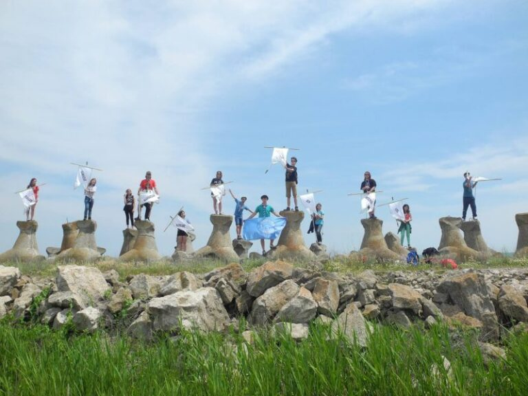

Poveștile primăverii: eXpediția 2016

A sosit şi mult aşteptatul hike de primăvară, perioada 20-22 mai… nu de alta, dar a fost la mare depărtare de casă… Glumesc 🙂 ! N-ar fi avut acelaşi farmec dacă ar fi fost altfel. Oricum, chiar am fost la mare, în zona Dobrogei şi ne-am cazat în satul Vişna, la cea mai primitoare gazdă, tanti Radiţa (Mulțumim și pe această cale celor de la Suvenir din Dobrogea pentru ospitalitate!).
Toate bune şi frumoase, pregătiţi de drum, nerăbdători să scăpăm de atmosfera specifică oraşului, ne-am adunam la staţia de metrou Anghel Saligny, în aşteptarea liderilor, care întarziau să apară. După ce ne-am plictisit aşteptând, am reuşit să ne strângem cu toţii… în sfârşit!! Şoferii, adică Adi, Petre si GMK (în premieră) s-au asigurat ca rezervoarele sunt pline, că nu lipseşte nimic şi că n-am uitat pe nimeni… GATA!… acum putem purcede la drum! Dar când ţi-e lumea mai dragă te lasă motorul… şi la noi a fost la propriu. La km 10 pe autostradă, auzim nişte buşituri în zona motorului, apoi mergem din ce în ce mai încet, iar la km-ul 15 ne oprim de tot.
Repede, sună-i pe Adi si Petre să se întoarcă… da’ de unde! Erau deja destul de departe de noi. Coborâm din maşină. Uimirea de pe feţele noastre spunea tot (mai ales la mine, Cecilia si Teo). Îl auzim apoi pe GMK spunând “Staţi aici. Mă întorc imediat.” și după vreo 5-10 minute revine cu o mână de bucăţi din piesele de la motor pe care le adunase de pe şosea… Chiar dacă eram într-un moment destul de disperat, cum s-ar zice, nu ne-am putut abţine să nu izbucnim în râs. Ce sa faci? N-ai ce să faci!… Acum dă-i şi împinge maşina. Într-un final ajung şi ceilalţi şi reuşim să o scoatem de pe autostradă. Bun… acum clar ne trebuie altă maşină. Din fericire, doamna Doina Vătau a fost de acord să ne-o împrumute pe a dumneaei. În timp ce Adi şi GMK au plecat după cealaltă maşină, noi ne străduiam să nu ne plictisim… prea tare. Abia pe la 16.30-16.45 am putut spune că am plecat, realmente, în hike.
Drumul s-a desfaşurat fără prea multe inconveniente. Din cauza întâmplării cu maşina am ajuns, ce-i drept, mai târziu decât ne-am propus, dar tot am vizitat ruinele cetaţii Ibida înainte să ajungem la destinaţie. Şi aici altă poveste, dacă pe lumină abia montăm cortul, pe întuneric ce să mai zici? Reuşim într-un final pe la 23.30-00.15 să ne organizăm, să luăm cina şi să ne punem la somn.
Dar dimineaţa a venit mai repede decât ne-am imaginat, aşa că a trebuit să lăsăm sacii de dormit și saltelele pe jumătate dezumflate și să pornim iar la drum… normal, după micul-dejun. Încolonaţi și cu ghiozdanele în spate, ne-am îndreptat spre comuna Jurilovca, de unde ne-am îmbarcat pe “şalupa lu’ Iubi”, cum i-ar zice Ana, şi am pornit într-o plimbare relaxantă pe lacul Golovița, spre Gura Portiţei. Mulţumim din nou primăriei Jurilovca şi doamnei Gentilia, care au contribuit la desfăşurarea cu succes a hike-ul nostru de primăvară! Odată ajunşi pe plajă, suntem întâmpinaţi de briza marii și nisipul cald. Nici nu a fost nevoie de programe pentru ce a urmat. Deci, imediat după pozele de pe malul marii a fost… marea bălaceală! Pentru cine s-a încumetat. Cu uscatul a fost mai greu, dar ne-am descurcat şi am împărţit frăţeşte singurul prosop disponibil. În timp ce majoritatea se încălzeau încă la soare, cei care ne-am sacrificat şi nu am intrat în apă, am început să scriem pe nisip cu scoici, melci şi multă imaginaţie CABANA SCOUT, dar cum mai multe mâini lucrează mai repede, ni s-au alăturat şi ceilalţi în curând. Am muncit mult, dar finalul a meritat din plin.
Deoarece se făcea târziu şi mai aveam şi altele în plan, am luat drumul înapoi spre lac, dar cum trebuia să aşteptăm să se întoarcă şalupa, am profitat şi am jucat câteva meciuri de volei şi “raţele si vânătorii” – între noi fie vorba, mai mult au alergat vânătorii decât raţele :).
Ne-am îmbarcat apoi din nou pe şalupă, obosiţi şi bronzaţi (fie după forma ochelarilor, fie după cea a tricourilor), dar nu într-atât încât să nu bifăm şi ultimul punct de pe lista de azi: ceremonia de depunere a promisiunii surpiză, pentru liderul nostru GMK. Deci am oprit frumos în mijlocul lacului, iar Adi și Petre au început să citească ceremonialul promisiunii. Abia mai târziu GMK a realizat exact ce se întamplă… de fapt a văzut în foile pe care le avea Petre, și pe Adi care ţinea eşarfa de lider în mână… dar astea sunt detalii! După încheierea ceremoniei, am făcut şi un strigăt cum numai Cabana ştie să-l facă, apoi ne-am continuat drumul înspre casă.
La cina am mai avut o utimă surpriză, de data asta din partea liderilor. După ce am muncit cot la cot să facem frigăruile, am sărbatorit înfiinţarea ca centru local, am ciocnit câte o gură de vin (din partea lu’ Iubi…), iar seara a culminat cu o grămadă de dulciuri. Una peste alta, ziua a fost un succes, iar tot ce contează este că toată lumea s-a simţit bine.
Dar iată că a venit şi ultima zi. Duminică dimineaţă, după ce am strâns corturile şi am pus bagajele în maşini, am dat o fugă până la ultimele două cetăţi pe care ne-am propus să le vizităm: Argamum și Enisala. Bine, fostele cetăţi…ce am văzut noi erau doar părţi din ziduri care au mai rezistat. Apoi, ne-am întors pentru ultima dată la casa din Vişina, unde am servit prânzul si ne-am luat la revedere de la gazda noastră, după care am pornit-o înapoi spre Bucureşti, cu noi amintiri de povestit şi pe care cu siguranţă nu le vom uita curând.
Şi cam aşa s-a încheiat şi această ieşire de primăveră… în câteva cuvinte AVENTURĂ, DISTRACȚIE, NISIP, APĂ, SOARE …. Deci, sigur ne vom întoarce!
de Andreea-Anca Teme